有喜事，当然要第一时间分享给爱人啦……
25岁的英国马术选手哈里·查尔斯（Harry Charles）前几天刚刚与队友一起在巴黎奥运会马术团体障碍赛中获得金牌，
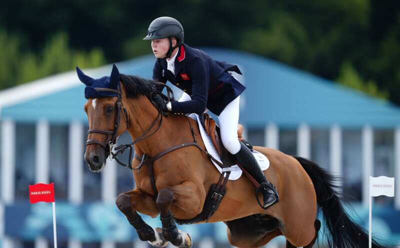
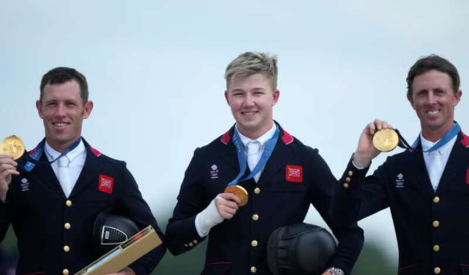
哈里·查尔斯（中）
转头他冲向看台上的女友，两人紧紧拥抱在一起：
拿到了金牌，还有甜甜的爱情，谁看了这一幕不得说一句：好幸福啊！
其实细细扒一下，你就会发现哈里令人艳羡的人生还不止于此，这就不得不先说一下他的女友——
她名叫伊芙Eve，1998年出生，今年26岁，现在是一名模特。
也许大家对她有点陌生，但一定对她爸爸很熟悉——史蒂夫·乔布斯（Steve Jobs）。
没错，就是苹果的那个乔布斯……
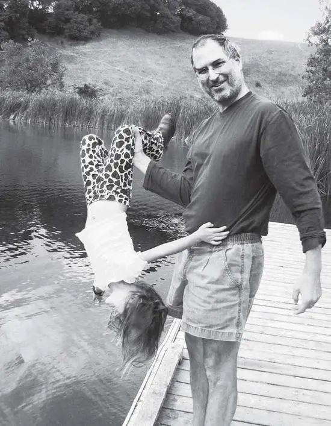
她就是乔布斯最宠爱的小公主，据外媒报道，当年乔布斯去世后他的遗产都留给了伊芙的妈妈劳伦，现在伊芙全家资产约201亿美元，富豪里的战斗机。
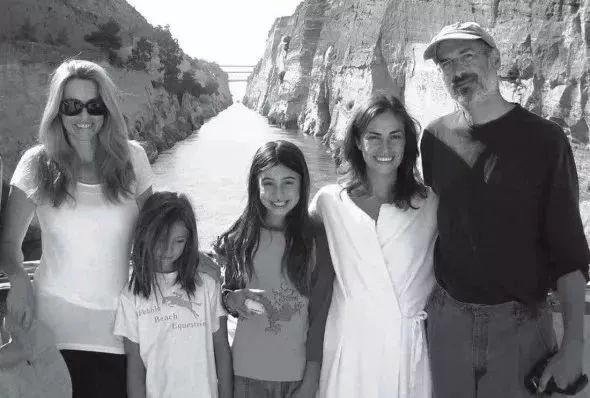
乔布斯还在世时，每每谈到伊芙，言语间满满都是爱：“她渐渐长成了一个有自己坚定想法，又有趣可爱的女孩。她特别有自己的主意，是我见过的孩子中，意志最坚定的一个！”
乔布斯甚至还开玩笑说，“他能够脑补伊芙未来管理苹果公司，甚至成为美国总统的样子……”
而伊芙呢，也是唯一有办法对付工作狂乔布斯的人，“她会打电话给正在工作的乔布斯的秘书，确保自己被安排进了老爸忙碌的日程表中”。
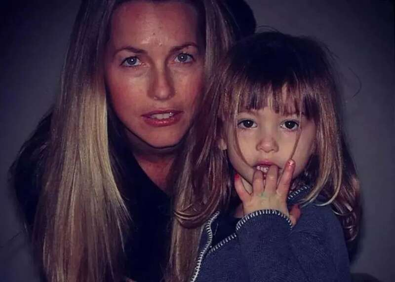
接下来的故事你大概也能猜到了，能获得乔布斯这么多喜爱的她自然不会让你失望。
首先伊芙的颜值那是相～当～高～
某些角度甚至有点神似最符合黄金比例的美女演员艾梅柏·希尔德（Amber Heard）。
除了长得美，身材更绝：
最最最可贵的是人家不仅有美丽的皮囊，还是斯坦福美女学霸：
伊芙在上高中时就非常努力，毕业后她收到了斯坦福大学和加州大学洛杉矶分校的录取通知书，最终她选择了斯坦福，因为那是父母相遇的地方。
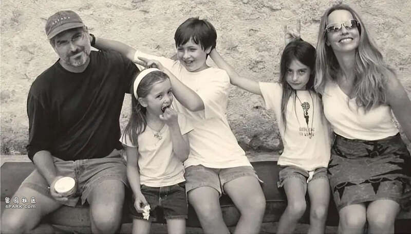
不过，2021年从斯坦福毕业后，伊芙没有随父亲的心愿，而是选择成为一名模特。
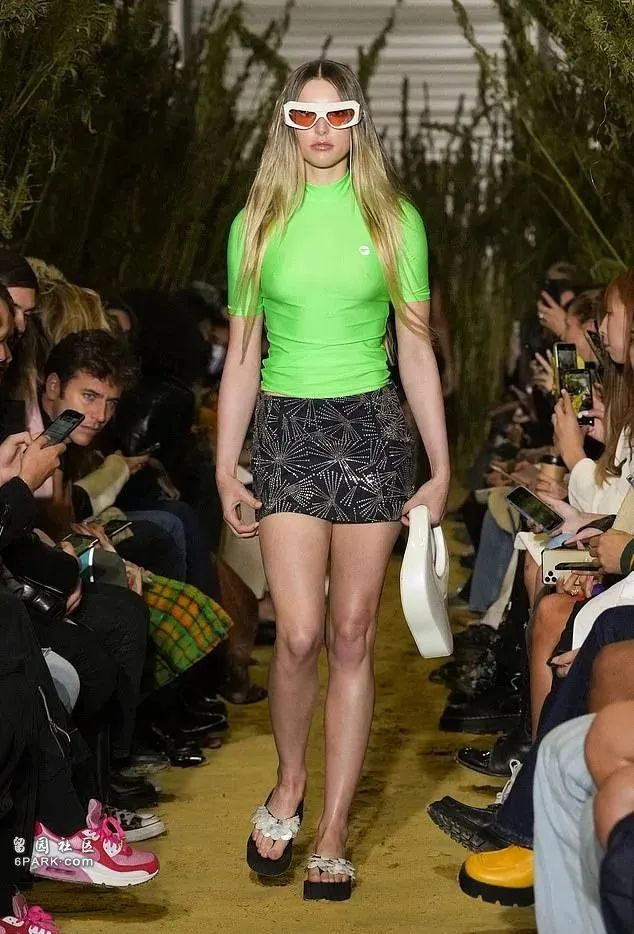
由于出众的身材和颜值，伊芙的模特事业可以说是一帆风顺：
与知名模特公司签约，登上时尚杂志，
为奢侈品牌拍摄照片，
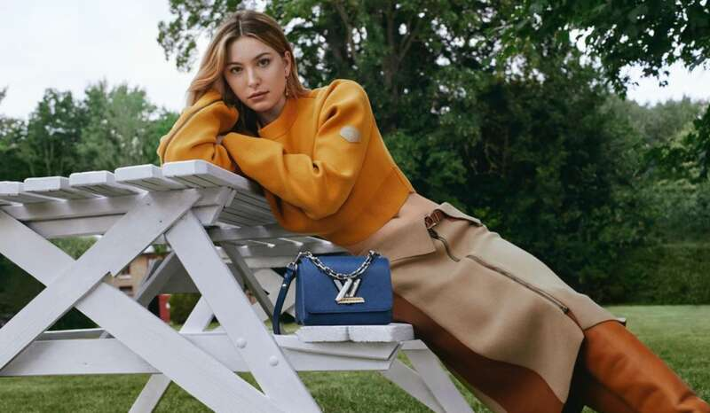
参加各种时尚活动和时装秀，
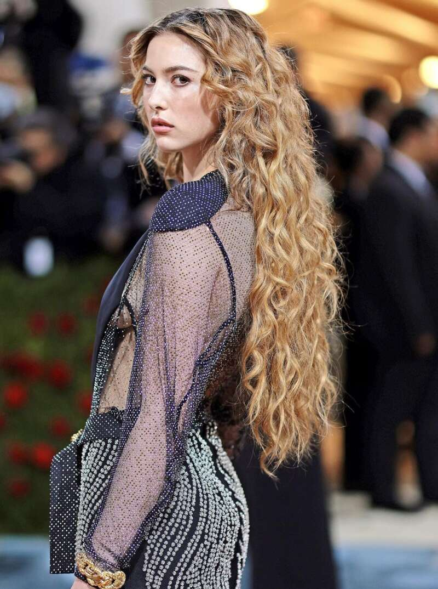
2022年，伊芙参加“时尚界奥斯卡”Met Gala。
除了是模特，伊芙还是一位经验丰富的马术运动员。
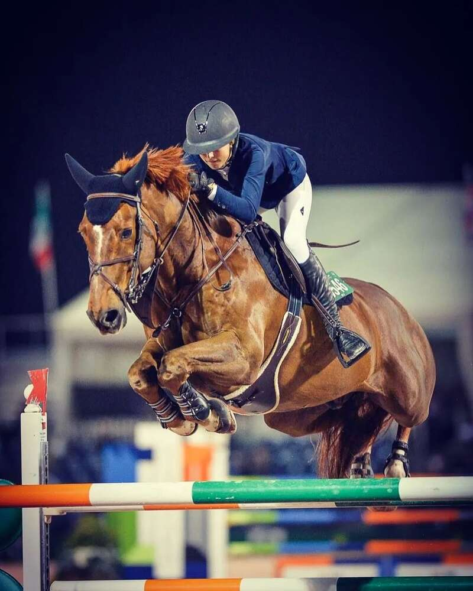
伊芙曾表示骑马让她变得谦卑，更有毅力，也更有恒心。
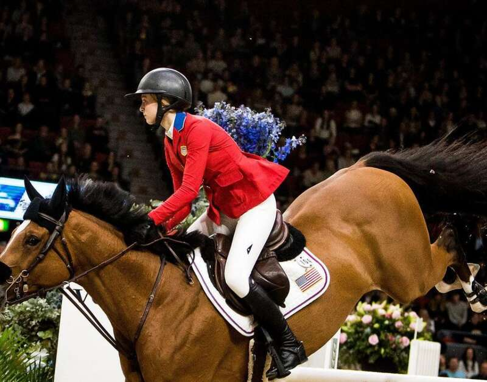
她曾代表美国参加马术国际赛事，伊芙和哈里这两个年轻人，也正是因为马术才结缘的……
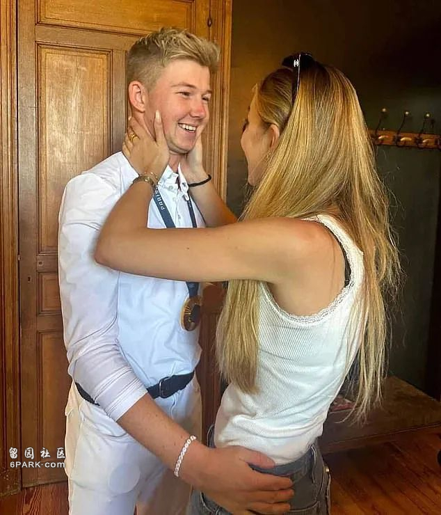
当然哈里本人也足够优秀，他13岁时受到父亲彼得·查尔斯（Peter Charles）的影响，开始专注马术。
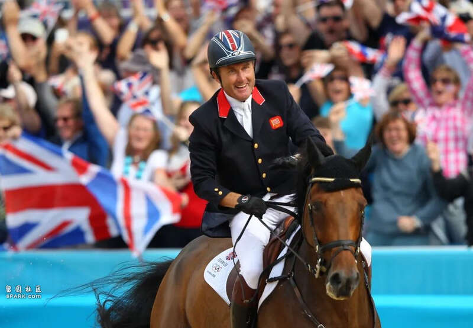
彼得·查尔斯也是一名马术选手，他与队友曾在2012年的伦敦奥运会上获得马术团体障碍赛冠军，为英国赢得了60年来首个该项目的金牌。今年哈里拿到金牌后，他们成为1948年以来第一对为英国队夺得奥运金牌的父子组合。
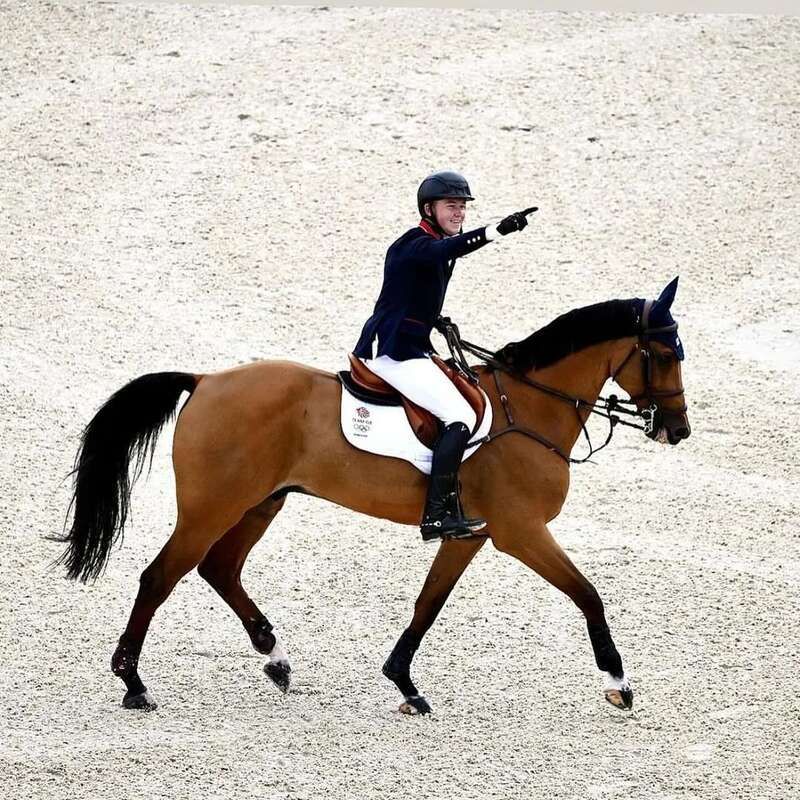
虽然不知道这段恋情能走多远，不过还是希望他们能够享受当下的幸福。
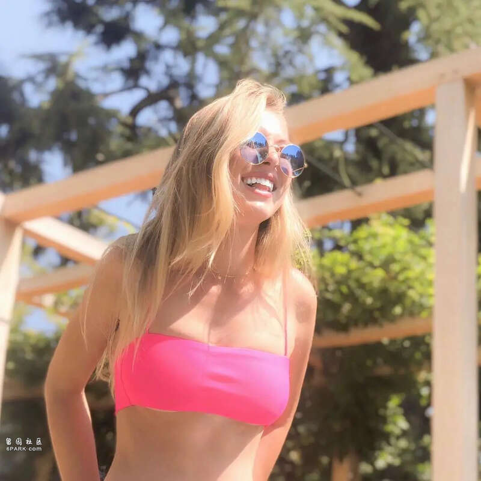